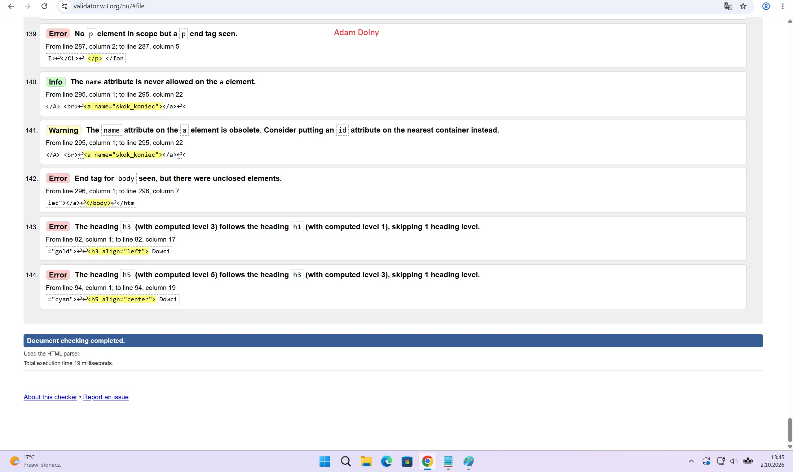
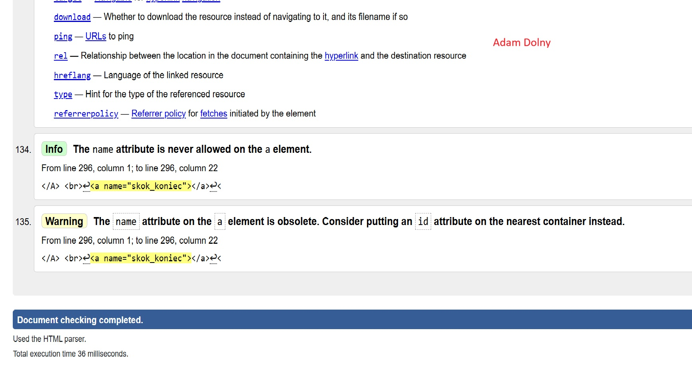

walidacja ucznia 1P g1
Walidacja HTML to sprawdzanie, czy kod strony jest zgodny ze standardami W3C (poprawne tagi, atrybuty, struktura).
Walidator (np. W3C Markup Validation Service) to narzędzie, które automatycznie analizuje kod i raportuje błędy — niezamknięte tagi, błędne atrybuty itp. — żeby je naprawić przed wdrożeniem.